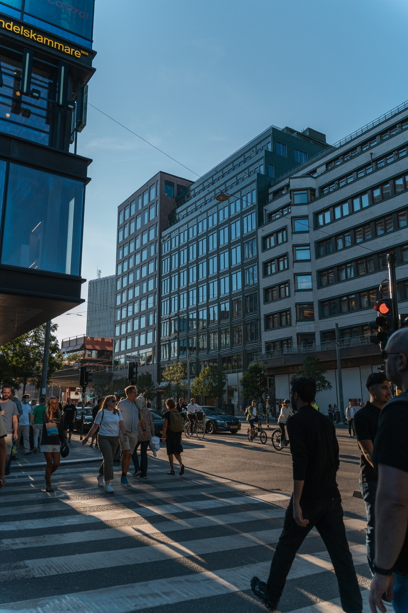

Stockholm – Urban Geometry
Ein Wochenende in Schweden. Zwischen historischer Altstadt und moderner Architektur bietet Stockholm endlose Motive. Besonders das Spiel aus Licht und Schatten in den engen Gassen hat mich fasziniert.
Unterwegs in der Welt. Geschichten und Bilder.
Ein Wochenende in Schweden. Zwischen historischer Altstadt und moderner Architektur bietet Stockholm endlose Motive. Besonders das Spiel aus Licht und Schatten in den engen Gassen hat mich fasziniert.
Nicht immer muss man nach Island reisen. Manchmal geschehen Wunder direkt vor der Haustür. Diese Aufnahme am Westerhever Leuchtturm entstand in einer klaren Nacht, als Sonnenwinde den Himmel färbten.
Wo früher Kohle gefördert wurde, findet man heute Kunst. Die Zeche Zollverein ist ein Paradebeispiel für den Wandel einer ganzen Region. Stahl, Rost und Sonnenuntergang.